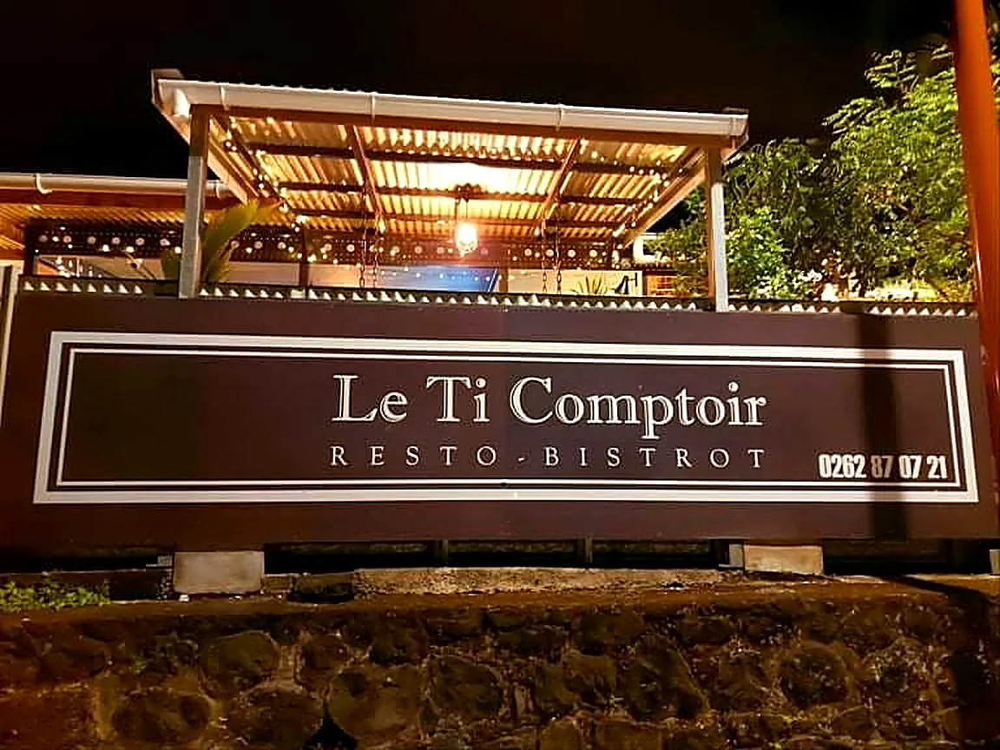
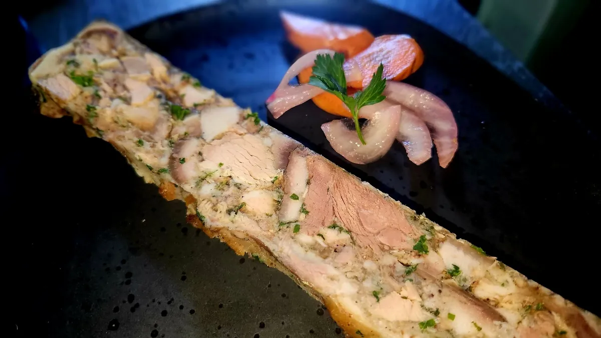
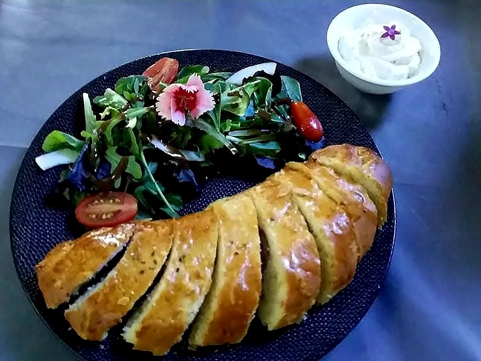
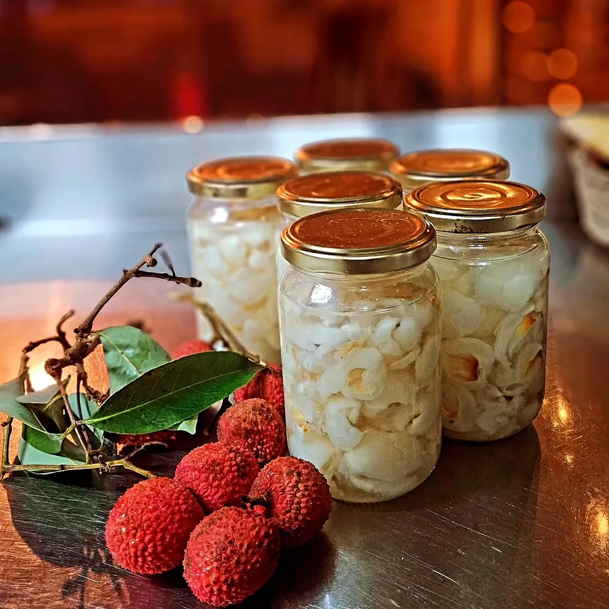

Saint-Joseph · La Réunion · depuis avril 2019
Le Ti Comptoir
Resto · Bistrot
Une cuisine métropolitaine aux produits locaux, écrite chaque jour à l'ardoise, dans un décor de bois, de coco et de vacoa.
15 rue Leconte de Lisle, centre-ville de Saint-Joseph
L'esprit du lieu
Un bistrot de cœur, au centre de Saint-Joseph
Ouvert à la mi-avril 2019, Le Ti Comptoir marie la bistronomie métropolitaine et les produits de l'île.
La décoration est artisanale et locale : bois, palette, métal, coco et vacoa. Le soir, la pergola s'allume de guirlandes au-dessus du muret de basalte, et la salle accueille jusqu'à 60 couverts.
Au fil des arrivages, la carte change : on suit l'ardoise, et nos publications annoncent les nouveautés de la semaine.
* 96 % de recommandations sur 75 avis, page Facebook du Ti Comptoir.
À l'ardoise
Ce qui est passé sur notre comptoir
Quelques arrivages annoncés sur notre page. La carte suit les saisons et le marché : appelez-nous pour connaître l'ardoise du jour.
Le Ti Comptoir
- Noix de Saint-Jacques & couteaux, arrivage en fraisseptembre 2026
- Pickles de letchis de Grand Galet, maisonfévrier 2026
- Fromage de têteaoût 2025
- Saucisse de Montbéliard briochéeaoût 2025
- Arrivage de viandes d'exceptionmars 2025
- Noix d'entrecôte & faux-filet Aberdeenfévrier 2025
Menu à l'ardoise · cuisine métropolitaine aux produits locaux
Dans l'assiette
Le fait maison, en vrai
Faites glisser →



Fait maison
La saison du letchi, toute l'année
« Les derniers letchis de l'année en provenance de Grand Galet, transformés en pickles au Ti Comptoir pour en profiter toute l'année. »
Publication du Ti Comptoir, février 2026Le produit local, gardé au meilleur de sa saison : voilà l'esprit de la maison, de la cuisine jusqu'au comptoir.
Pour les fêtes
Offrez une belle table au Ti Comptoir
Un dîner sous les guirlandes, une ardoise de fête, un moment à partager : écrivez-nous pour réserver votre table des fêtes ou offrir un repas à un proche.
Illustration : carte à offrir
Venir nous voir
Réservez votre table
Midi et soir, sur réservation. Les ouvertures exceptionnelles et les nouveautés de l'ardoise sont annoncées sur notre page Facebook.
- Réservations
- 0262 87 07 21
- leticomptoir@gmail.com
- Paiement
- Cartes bancaires, chèques, espèces